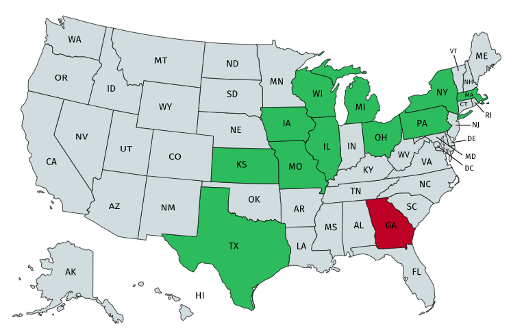
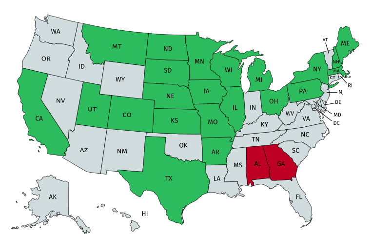
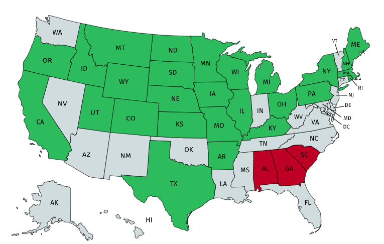
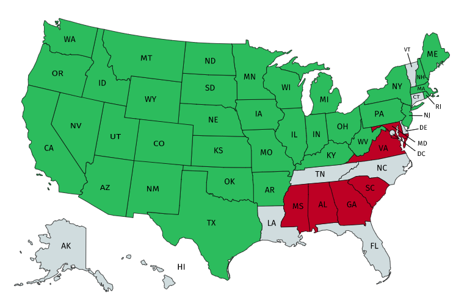
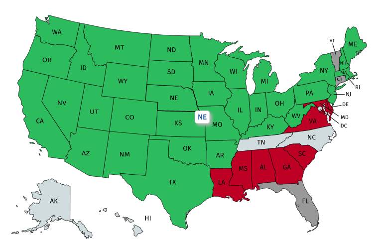
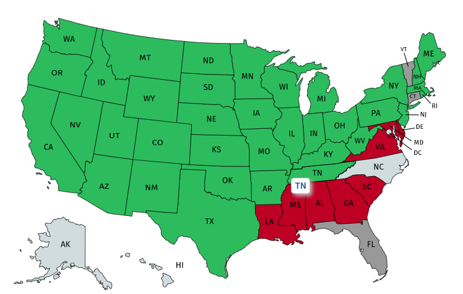

19th Amendment
Home
(current)
pre-Process
Process
Fed Gov't
Harry Burn
States
post-Process
Sources
July 1919
11 states vote to ratify
Wisconsin
Illinois
Michigan
Ohio
Kansas
Pennsylvania
Massachusetts
Missouri
Iowa
Texas
New York
Georgia becomes 1st state to vote against it.


End of 1919
More states voted to ratify
Arkansas
Montana
Nebraska
Utah
Maine
North Dakota
South Dakota
Colorado
California
New Hampshire
Minnesota
Alabama becomes the second state vote against it.
January 1920
5 more states vote to ratify
Kentucky
Rhode Island
Indiana
Wyoming
Oregon
South Carolina votes against it.


March 1920
8 more states soon vote to ratify
Nevada
New Mexico
Oklahoma
Washington
Idaho
New Jersey
Arizona
West Virginia
Mississippi, Maryland, and Virginia vote against it.
1 more needed for ratification
June & July 1920
Deleware votes against ratification while the states of Florida, Connecticut and Vermont refuse to consider a vote for the ammendment.
It's up to Tennesse or North Carolina with the latter being unreliable for ratification.


August 1920
Tennesse gives the final vote needed for ratification.
8/24: U.S SOS Bainbridge Colby certifies the ammendment
Here is a resource with a digital timeline of when states gave suffrage